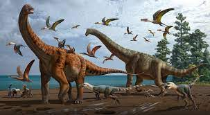
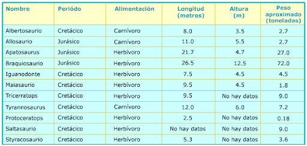

<!doctype html>
<html lang="en">
  <head>
    <!-- Required meta tags -->
    <meta charset="utf-8">
    <meta name="viewport" content="width=device-width, initial-scale=1">

    <!-- Bootstrap CSS -->
    <link href="https://cdn.jsdelivr.net/npm/bootstrap@5.1.3/dist/css/bootstrap.min.css" rel="stylesheet" integrity="sha384-1BmE4kWBq78iYhFldvKuhfTAU6auU8tT94WrHftjDbrCEXSU1oBoqyl2QvZ6jIW3" crossorigin="anonymous">

    
    <!-- Optional JavaScript; choose one of the two! -->

    <!-- Option 1: Bootstrap Bundle with Popper -->
    <script src="https://cdn.jsdelivr.net/npm/bootstrap@5.1.3/dist/js/bootstrap.bundle.min.js" integrity="sha384-ka7Sk0Gln4gmtz2MlQnikT1wXgYsOg+OMhuP+IlRH9sENBO0LRn5q+8nbTov4+1p" crossorigin="anonymous"></script>

    <!-- Option 2: Separate Popper and Bootstrap JS -->
    <!--
    <script src="https://cdn.jsdelivr.net/npm/@popperjs/core@2.10.2/dist/umd/popper.min.js" integrity="sha384-7+zCNj/IqJ95wo16oMtfsKbZ9ccEh31eOz1HGyDuCQ6wgnyJNSYdrPa03rtR1zdB" crossorigin="anonymous"></script>
    <script src="https://cdn.jsdelivr.net/npm/bootstrap@5.1.3/dist/js/bootstrap.min.js" integrity="sha384-QJHtvGhmr9XOIpI6YVutG+2QOK9T+ZnN4kzFN1RtK3zEFEIsxhlmWl5/YESvpZ13" crossorigin="anonymous"></script>
    -->
  </body>
</html>


<nav class="navbar navbar-expand-lg navbar-dark bg-dark">
    <div class="container-fluid">
      <a class="navbar-brand" href="formulario">Registrarse</a>
      <button class="navbar-toggler" type="button" data-bs-toggle="collapse" data-bs-target="#navbarNav" aria-controls="navbarNav" aria-expanded="false" aria-label="Toggle navigation">
        <span class="navbar-toggler-icon"></span>
      </button>
      <div class="collapse navbar-collapse" id="navbarNav">
        <ul class="navbar-nav">
          <li class="nav-item">
            <a class="nav-link active" aria-current="page" href="file:///C:/sitio/index3.html">Historia</a>
          </li>
          <li class="nav-item">
            <a class="nav-link" href="file:///C:/sitio/index2.html#">Tipos</a>
          </li>
          
        
          
          </li>
        </ul>
      </div>
    </div>
  </nav>


  
    <!-- Navbar content -->
  </nav>

  <title>Hello, world!</title>
</head>
<body>
  <h1>Los dinosaurios</h1>

</head>
<body>

    <br>

    <center><h1>¿que son los dinosaurios?</h1></center>

        <p>Los dinosaurios fueron una especie que pobló el planeta hace millones de años. Se trataba de reptiles prehistóricos de todos los tamaños, incluso gigantescos que poblaron el planeta tierra durante la denominada "Era Mesozoica". Al terminar esta era, tanto los dinosaurios como otro gran número de especies se extinguieron aunque todavía no se conocen con seguridad las causas, pero existen diversas hipótesis. Aunque mucha gente piensa que todos los dinosaurios convivieron en la misma época, lo cierto es que la Era Mesozoica se divide a su vez en tres períodos. En el Triásico, hace entre 254 y 204 millones de años sobre todo fueron dinosaurios herbívoros los que poblaban la tierra, en el Jurásico, hace entre 204 y 140 millones de años y en el Cretácico, hace entre 140 y 65 millones de años, un gran número de estos seres vivos fueron carnívoros</p>
   
<body>
        
    

    <br> 
    <br>

    <center><h1>Caracteristicas de los dinosaurios</h1></center>
    

    <p>Los dinosaurios eran unos animales que se diferenciaban de los reptiles que conocemos hoy día puesto que éstos caminaban con sus patas bajo sus caderas. No se arrastraban sino que caminaban, en su gran mayoría, de forma erecta. Estos seres vivos contaban además con un agujero en la zona de su cráneo ubicada entre las cuencas de los ojos y las fosas nasales, tenían vértebras sacras en la pelvis y sus extremidades estaban ubicadas bajo su cuerpo. Tenían también músculos en el húmero y en la mandíbula y estructuras fuertes en las caderas, rodillas y tobillos para poder moverse.</p>

    


<body background="pagina/fondo3.jpg">

  

  
